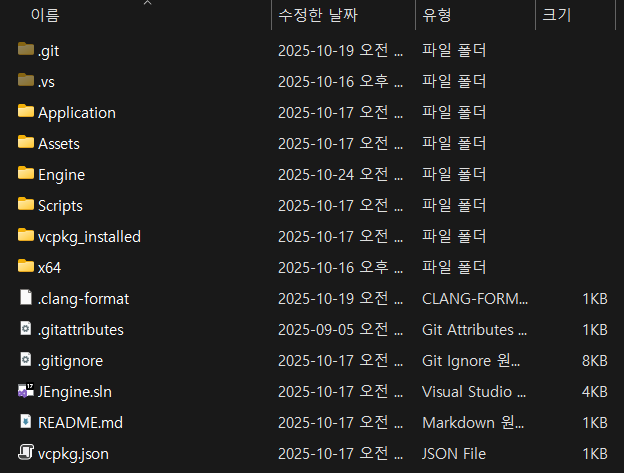
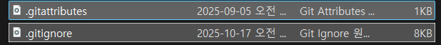

프로젝트 생성
-
엔진 프로젝트를 시작하기 하기 위해 Git과 VS2022 설정을 해줬습니다.
-
규모가 작은 아주 간단한 계산기 같은 프로젝트면 상관없겠지만 렌더러와 같은 클래스가 많아지고 기능이 이것저것 많이 들어가는 경우 Project를 여러개 만들어서 Dependency를 설정해주는 것이 코드를 정리하기 더 좋은 것 같습니다.
-
추가적으로 클래스가 많아지면 기능별로 클래스를 따로 폴더별로 묶어서 분류하는게 관리하기 종하집니다.
- Application과 Engine Project의 설정창


-
일단 Application, Asset, Engine 3개의 프로젝트를 만들어줬습니다.
-
여기서 Application과 Asset은 그냥 Empty Project로 아무것도 없이 만들었고 Engine은 이번 프로젝트의 Core 부분으로 Static Library로 프로젝트를 생성했습니다.
- Asset은 프로젝트로 만들어주긴 했는데 굳이 만들어주지 않아도 될 것 같고 따로 폴더만 만들어도 됩니다.
-
여기서는 Texture, Shader 등의 Asset들을 따로 보기 편하게 하기 위해서 빈 프로젝트로 묶어서 Visual Studio에서 보기 편하려고 한 것입니다.


- Project Dependency 설정
- Project의 Dependency를 설정해서 나중에 Application Project에서 Engine Project를
#include를 사용해서 편하게 가져올 수 있게 해줬습니다.- 물론 두 번째 이미지처럼 Engine Project는 static library이므로 build하고 나온
.lib파일을 가져다가 직접 Link시켜서 사용할 수 있지만 위의 방법이 더 편리합니다.
- 물론 두 번째 이미지처럼 Engine Project는 static library이므로 build하고 나온

Formatter
- 
.clang-format파일을 프로젝트를 생성한 위치에 배치해서 간단하게 formatter를 적용시켰습니다.- 이건 코드가 많아져도 일관적인 Format을 유지할 수 있게 해줍니다.
---
BasedOnStyle: LLVM
IndentWidth: 4
TabWidth: 4
UseTab: Never
ColumnLimit: 100
Language: Cpp
Standard: c++20
AllowShortBlocksOnASingleLine: false
AllowShortIfStatementsOnASingleLine: false
AllowShortLoopsOnASingleLine: false
AllowShortFunctionsOnASingleLine: false
AlwaysBreakTemplateDeclarations: Yes
AlignTrailingComments: true
BreakBeforeBraces: Custom
BraceWrapping:
AfterFunction: false
AfterClass: true
AfterControlStatement: Never
AfterEnum: false
AfterNamespace: false
AfterStruct: true
BeforeCatch: false
BeforeElse: false
# Multiplatform compatibility settings
IncludeBlocks: Preserve
SortIncludes: false
FixNamespaceComments: true
CompactNamespaces: false
PointerAlignment: Left
ReferenceAlignment: Pointer
AccessModifierOffset: -2
DeriveLineEnding: false
UseCRLF: falseGit 설정
- 
- Git 설정 파일들
.gitattributes파일의 경우 지금 나는 사용할 필요가 없지만 강의에서 배웠던 것처럼 OS마다 Text 파일의 Format이 다르기 때문에 다른 OS에서 프로젝트를 실행하는 경우응 위해 만든 파일로 GPT를 사용해서 만들었다고 하며 이렇게 프로젝트 위치에 배치해두면 됩니다.
# Ensure consistent line endings across platforms
* text=auto eol=lf
# Specific file types
*.cpp text eol=lf
*.h text eol=lf
*.hpp text eol=lf
*.c text eol=lf
*.cmake text eol=lf
*.txt text eol=lf
*.md text eol=lf
*.json text eol=lf
*.yml text eol=lf
*.yaml text eol=lf
# Shell scripts must use LF
*.sh text eol=lf
# Windows-specific files can use CRLF
*.bat text eol=crlf
*.cmd text eol=crlf
# Binary files
*.png binary
*.jpg binary
*.spv binary
*.ktx2 binary
# Additional C++ related files
*.cc text eol=lf
*.cxx text eol=lf
*.inl text eol=lf
*.inc text eol=lf
# Build system files
*.vcxproj text eol=crlf
*.vcxproj.filters text eol=crlf
*.vcxproj.user text eol=crlf
*.sln text eol=crlf
Makefile text eol=lf
# Shader files
*.vert text eol=lf
*.frag text eol=lf
*.glsl text eol=lf
*.hlsl text eol=lf
# Additional binary types
*.exe binary
*.dll binary
*.so binary
*.dylib binary
*.lib binary
*.a binary
*.obj binary
*.o binary
*.pdb binary.gitignore파일의 경우 Github에 올라가면 안되는 중요한 데이터를 포함한 파일이나 쓸모없는 파일, 너무 큰 파일등을 올리면 좋지 않기 때문에 이런 파일이나 폴더를 제외할 때 설정하는 파일입니다.
## Ignore Visual Studio temporary files, build results, and
## files generated by popular Visual Studio add-ons.
##
## Get latest from https://github.com/github/gitignore/blob/main/VisualStudio.gitignore
Libraries/
vcpkg_installed/
build/
assets/characters
assets/models
assets/Noto_Sans_KR
assets/textures
**/imgui.ini
# User-specific files
*.rsuser
*.suo
*.user
*.userosscache
*.sln.docstates
*.env
# User-specific files (MonoDevelop/Xamarin Studio)
*.userprefs
# Mono auto generated files
mono_crash.*
# Build results
[Dd]ebug/
[Dd]ebugPublic/
[Rr]elease/
[Rr]eleases/
x64/
x86/
[Ww][Ii][Nn]32/
[Aa][Rr][Mm]/
[Aa][Rr][Mm]64/
[Aa][Rr][Mm]64[Ee][Cc]/
bld/
[Oo]bj/
[Oo]ut/
[Ll]og/
[Ll]ogs/
# Build results on 'Bin' directories
**/[Bb]in/*
# Uncomment if you have tasks that rely on *.refresh files to move binaries
# (https://github.com/github/gitignore/pull/3736)
#!**/[Bb]in/*.refresh
# Visual Studio 2015/2017 cache/options directory
.vs/
# Uncomment if you have tasks that create the project's static files in wwwroot
#wwwroot/
# Visual Studio 2017 auto generated files
Generated\ Files/
# MSTest test Results
[Tt]est[Rr]esult*/
[Bb]uild[Ll]og.*
*.trx
# NUnit
*.VisualState.xml
TestResult.xml
nunit-*.xml
# Approval Tests result files
*.received.*
# Build Results of an ATL Project
[Dd]ebugPS/
[Rr]eleasePS/
dlldata.c
# Benchmark Results
BenchmarkDotNet.Artifacts/
# .NET Core
project.lock.json
project.fragment.lock.json
artifacts/
# ASP.NET Scaffolding
ScaffoldingReadMe.txt
# StyleCop
StyleCopReport.xml
# Files built by Visual Studio
*_i.c
*_p.c
*_h.h
*.ilk
*.meta
*.obj
*.idb
*.iobj
*.pch
*.pdb
*.ipdb
*.pgc
*.pgd
*.rsp
# but not Directory.Build.rsp, as it configures directory-level build defaults
!Directory.Build.rsp
*.sbr
*.tlb
*.tli
*.tlh
*.tmp
*.tmp_proj
*_wpftmp.csproj
*.log
*.tlog
*.vspscc
*.vssscc
.builds
*.pidb
*.svclog
*.scc
# Chutzpah Test files
_Chutzpah*
# Visual C++ cache files
ipch/
*.aps
*.ncb
*.opendb
*.opensdf
*.sdf
*.cachefile
*.VC.db
*.VC.VC.opendb
# Visual Studio profiler
*.psess
*.vsp
*.vspx
*.sap
# Visual Studio Trace Files
*.e2e
# TFS 2012 Local Workspace
$tf/
# Guidance Automation Toolkit
*.gpState
# ReSharper is a .NET coding add-in
_ReSharper*/
*.[Rr]e[Ss]harper
*.DotSettings.user
# TeamCity is a build add-in
_TeamCity*
# DotCover is a Code Coverage Tool
*.dotCover
# AxoCover is a Code Coverage Tool
.axoCover/*
!.axoCover/settings.json
# Coverlet is a free, cross platform Code Coverage Tool
coverage*.json
coverage*.xml
coverage*.info
# Visual Studio code coverage results
*.coverage
*.coveragexml
# NCrunch
_NCrunch_*
.NCrunch_*
.*crunch*.local.xml
nCrunchTemp_*
# MightyMoose
*.mm.*
AutoTest.Net/
# Web workbench (sass)
.sass-cache/
# Installshield output folder
[Ee]xpress/
# DocProject is a documentation generator add-in
DocProject/buildhelp/
DocProject/Help/*.HxT
DocProject/Help/*.HxC
DocProject/Help/*.hhc
DocProject/Help/*.hhk
DocProject/Help/*.hhp
DocProject/Help/Html2
DocProject/Help/html
# Click-Once directory
publish/
# Publish Web Output
*.[Pp]ublish.xml
*.azurePubxml
# Note: Comment the next line if you want to checkin your web deploy settings,
# but database connection strings (with potential passwords) will be unencrypted
*.pubxml
*.publishproj
# Microsoft Azure Web App publish settings. Comment the next line if you want to
# checkin your Azure Web App publish settings, but sensitive information contained
# in these scripts will be unencrypted
PublishScripts/
# NuGet Packages
*.nupkg
# NuGet Symbol Packages
*.snupkg
# The packages folder can be ignored because of Package Restore
**/[Pp]ackages/*
# except build/, which is used as an MSBuild target.
!**/[Pp]ackages/build/
# Uncomment if necessary however generally it will be regenerated when needed
#!**/[Pp]ackages/repositories.config
# NuGet v3's project.json files produces more ignorable files
*.nuget.props
*.nuget.targets
# Microsoft Azure Build Output
csx/
*.build.csdef
# Microsoft Azure Emulator
ecf/
rcf/
# Windows Store app package directories and files
AppPackages/
BundleArtifacts/
Package.StoreAssociation.xml
_pkginfo.txt
*.appx
*.appxbundle
*.appxupload
# Visual Studio cache files
# files ending in .cache can be ignored
*.[Cc]ache
# but keep track of directories ending in .cache
!?*.[Cc]ache/
# Others
ClientBin/
~$*
*~
*.dbmdl
*.dbproj.schemaview
*.jfm
*.pfx
*.publishsettings
orleans.codegen.cs
# Including strong name files can present a security risk
# (https://github.com/github/gitignore/pull/2483#issue-259490424)
#*.snk
# Since there are multiple workflows, uncomment next line to ignore bower_components
# (https://github.com/github/gitignore/pull/1529#issuecomment-104372622)
#bower_components/
# RIA/Silverlight projects
Generated_Code/
# Backup & report files from converting an old project file
# to a newer Visual Studio version. Backup files are not needed,
# because we have git ;-)
_UpgradeReport_Files/
Backup*/
UpgradeLog*.XML
UpgradeLog*.htm
ServiceFabricBackup/
*.rptproj.bak
# SQL Server files
*.mdf
*.ldf
*.ndf
# Business Intelligence projects
*.rdl.data
*.bim.layout
*.bim_*.settings
*.rptproj.rsuser
*- [Bb]ackup.rdl
*- [Bb]ackup ([0-9]).rdl
*- [Bb]ackup ([0-9][0-9]).rdl
# Microsoft Fakes
FakesAssemblies/
# GhostDoc plugin setting file
*.GhostDoc.xml
# Node.js Tools for Visual Studio
.ntvs_analysis.dat
node_modules/
# Visual Studio 6 build log
*.plg
# Visual Studio 6 workspace options file
*.opt
# Visual Studio 6 auto-generated workspace file (contains which files were open etc.)
*.vbw
# Visual Studio 6 auto-generated project file (contains which files were open etc.)
*.vbp
# Visual Studio 6 workspace and project file (working project files containing files to include in project)
*.dsw
*.dsp
# Visual Studio 6 technical files
*.ncb
*.aps
# Visual Studio LightSwitch build output
**/*.HTMLClient/GeneratedArtifacts
**/*.DesktopClient/GeneratedArtifacts
**/*.DesktopClient/ModelManifest.xml
**/*.Server/GeneratedArtifacts
**/*.Server/ModelManifest.xml
_Pvt_Extensions
# Paket dependency manager
**/.paket/paket.exe
paket-files/
# FAKE - F# Make
**/.fake/
# CodeRush personal settings
**/.cr/personal
# Python Tools for Visual Studio (PTVS)
**/__pycache__/
*.pyc
# Cake - Uncomment if you are using it
#tools/**
#!tools/packages.config
# Tabs Studio
*.tss
# Telerik's JustMock configuration file
*.jmconfig
# BizTalk build output
*.btp.cs
*.btm.cs
*.odx.cs
*.xsd.cs
# OpenCover UI analysis results
OpenCover/
# Azure Stream Analytics local run output
ASALocalRun/
# MSBuild Binary and Structured Log
*.binlog
MSBuild_Logs/
# AWS SAM Build and Temporary Artifacts folder
.aws-sam
# NVidia Nsight GPU debugger configuration file
*.nvuser
# MFractors (Xamarin productivity tool) working folder
**/.mfractor/
# Local History for Visual Studio
**/.localhistory/
# Visual Studio History (VSHistory) files
.vshistory/
# BeatPulse healthcheck temp database
healthchecksdb
# Backup folder for Package Reference Convert tool in Visual Studio 2017
MigrationBackup/
# Ionide (cross platform F# VS Code tools) working folder
**/.ionide/
# Fody - auto-generated XML schema
FodyWeavers.xsd
# VS Code files for those working on multiple tools
.vscode/*
!.vscode/settings.json
!.vscode/tasks.json
!.vscode/launch.json
!.vscode/extensions.json
!.vscode/*.code-snippets
# Local History for Visual Studio Code
.history/
# Built Visual Studio Code Extensions
*.vsix
# Windows Installer files from build outputs
*.cab
*.msi
*.msix
*.msm
*.msp
-
.gitignore은 인터넷에서 유명한 설정파일을 찾아볼 수 있고 GPT를 사용해도 쉽게 만들어줄 수 있습니다. -

-
Github 페이지
- 이걸 Github에 올려서 프로젝트를 공유하고 Issue, Branch 등을 관리할 예정입니다.
- https://github.com/Jin-SukKim/JEngine
vcpkg
-
프로젝트를 진행하는데 필요한 외부 Library를 vcpkg를 이용하면 vs2022에서 쉽게 사용할 수 있습니다. C++의 경우 외부 라이브러리를 가져와 사용하려면 Library를 직접 다운받은 다음에 폴더 경로를 VS2022에 설정하고 Link를 해줘야 합니다. 이런 과정은 매우 번거롭고 Link하는데 실수로 오류도 많이 생깁니다. 하지만 vcpkg를 사용하면 python의
pip install처럼 쉽게 사용할 수 있습니다. -
vcpkg를 다운받은 다음에 컴퓨터의 Environment Path에서 경로를 설정해주면 좀 더 쉽게 사용할 수 있지만 아니라면 vcpkg를 다운받은 폴더 위치에서 command 창을 이용해서 vcpkg를 사용할 수 있습니다.
vcpkg search library // 원하는 library가 있는지 확인
vcpkg install library // 원하는 라이브러리 설치
vcpkg integrate install // vcpkg로 설치된 모든 라이브러리를 vs2022에 연동
vcpkg integrate install은 한 번 해준 뒤에는vcpkg install만 사용해 다운받으면 바로바로 사용할 수 있습니다.- 그런데 이렇게 command 창에서 직접 다운받는 경우는 Github에서 프로젝트를 새로 다운받으면 필요한 라이브러리를 매번 직접 설치해줘야 합니다.
- 이걸 좀 더 쉽게
.json파일을 통해 어떤 라이브러리들이 필요한지 설정해주면 Visual Studio에서 Build할때 필요한 라이브러리를 자동으로 설치할 수 있도록 해줄 수 있습니다.
{
"dependencies": [
"assimp",
"stb",
"directxtk12",
"directxmath",
"directxmesh",
{
"name": "directxtex",
"features": [
"openexr"
]
},
{
"name": "imgui",
"features": [
"wchar32",
"dx12-binding",
"win32-binding"
]
}
],
"builtin-baseline": "dd3097e305afa53f7b4312371f62058d2e665320"
}-
지금 프로젝트를 시작하면서 아마 필요할 것이라 생각되는 DirectX12, ImGui, Assimp 등의 라이브러리들을 설정해두었습니다.
-
추가로
buildin-baseline이라는 설정이 있는데 이건 vcpkg 버전에 따라 다운받을 수 있는 라이브러리의 버전도 달라지기에 이걸 설정해서 항상 동일한 버전의 라이브러리들을 다운받을 수 있게 해주는 것입니다.
vcpkg x-update-baseline --add-initial-baseline- 이걸 Command 창에서 실행해주면 baseline을 추가할 수 있습니다. 이건 맨 처음 실행하는 것으로
builtin-baseline이 json 파일에서 없어야 됩니다. - 이 파일이 있다고 바로 적용되는건 아니고 Visual Studio에서 추가로 사용할 것이라고 설정해줘야 합니다.

- vcpkg.json 사용 설정
- 이렇게 Visual Studio의 project에서
Use Vcpkg Manifest를true로 설정해줘야 json 파일을 사용해 build시 없는 라이브러리들을 다운받을 수 있게 됩니다.- (참고로 이렇게 다운된 라이브러리들은
vcpkg_installed라는 폴더가 생기면서 저장되니 .gitignore 파일에서 이 폴더를 제외시켜주는게 좋습니다.)
- (참고로 이렇게 다운된 라이브러리들은